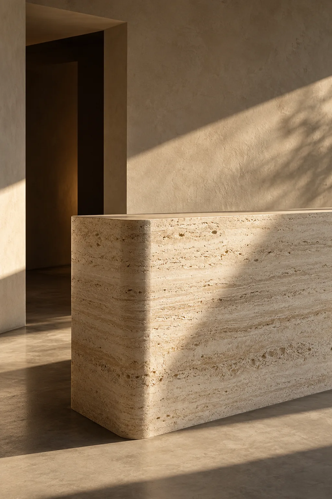
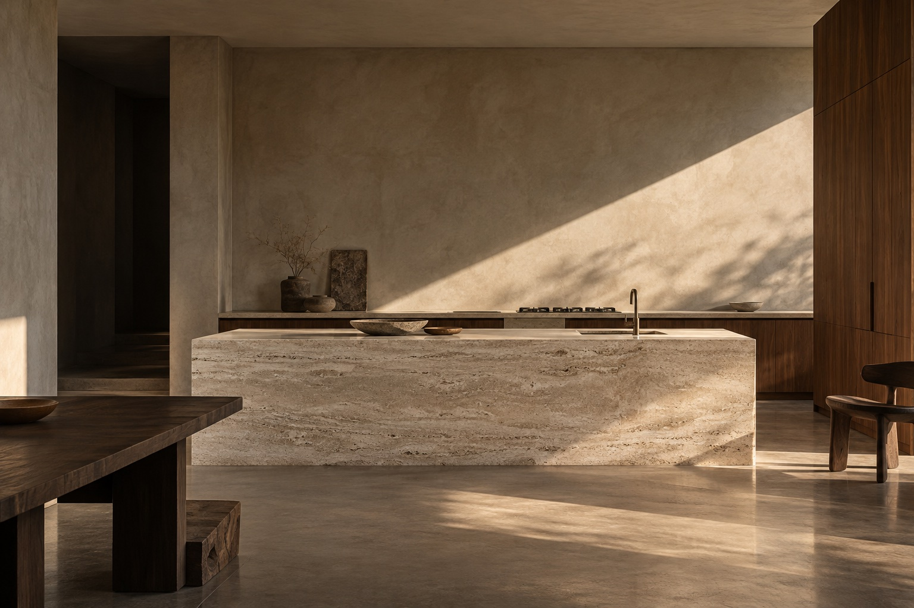
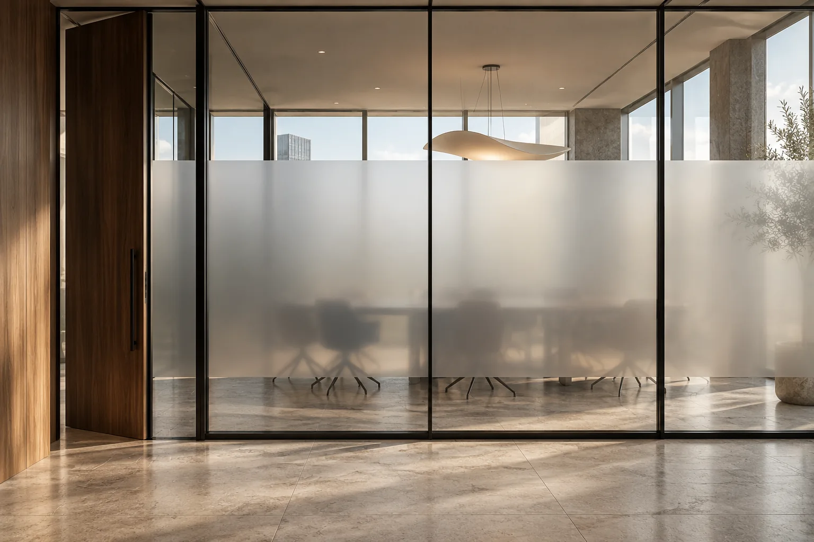

Bold.
A different finish. An entirely new perspective. Transform the surfaces you have into the spaces you imagine.
An atelier for
considered surfaces
and renewed spaces.
A different finish. An entirely new perspective. Transform the surfaces you have into the spaces you imagine.
Stone, wood and mineral expressions. Materials that bring depth, warmth and character to everyday spaces.
Keep what matters. Refine what surrounds it. A considered transformation, with every detail in its place.
A kitchen. A wardrobe. A wall. We begin with what is already there, and imagine what it could become.
Decorative architectural vinyl gives existing surfaces another life through texture, tone and a different point of view.
From furniture to entire interiors, a coherent finish brings the space together.



A new finish for kitchens, wardrobes, furniture and walls. Decorative vinyl that reimagines existing surfaces.
Frosted and tinted films that shape privacy, light and the feeling of a space.
Considered surface finishes, branded details and protective films for places where people work, meet and stay.
One considered change.
A world of possibility.
Our atelier is coming to life.
Be there for the first reveal.